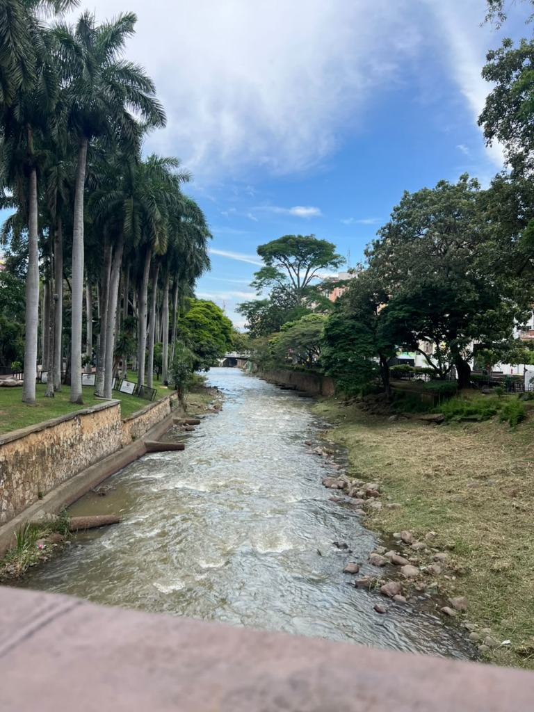
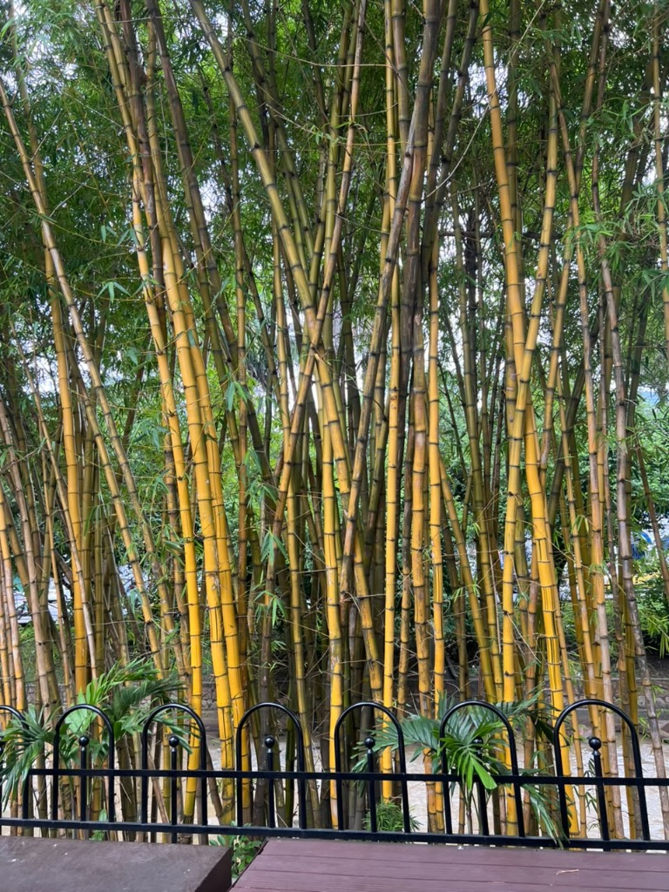
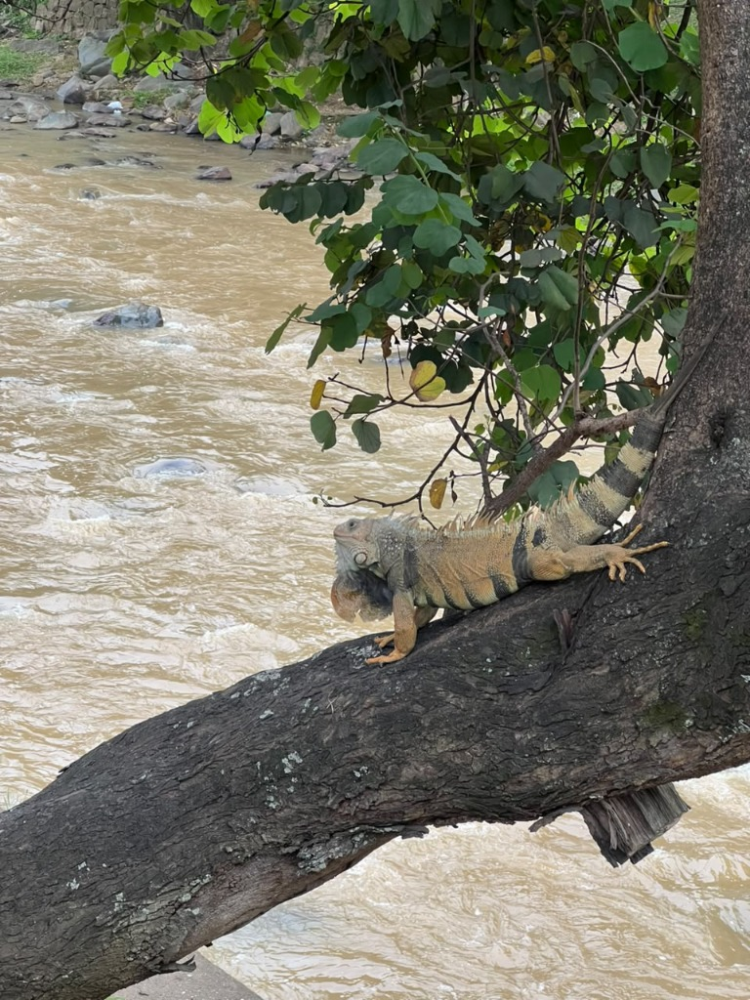
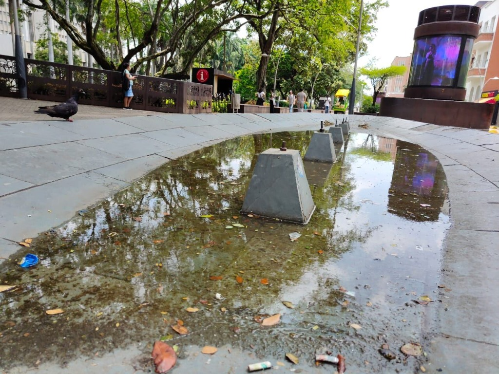

Análisis científico de la contaminación ambiental y la problemática sanitaria en el sector del Bulevar del Río (Calle 8ª a Calle 12ª). Desde la evidencia visual de campo hasta el diagnóstico comprobable.
30+ residuos
Por cada 10 m de ladera
50–70 objetos
Pico nocturno (6–9 p. m.)
Calle 8ª – 12ª
Tramo Bulevar del Río
El Bulevar del Río es uno de los espacios públicos más emblemáticos de Santiago de Cali: un corredor ecológico, cultural y turístico donde convergen la biodiversidad ribereña, el comercio gastronómico y la vida ciudadana. Sin embargo, esta intensa dinámica urbana ejerce una presión directa sobre el cauce del Río Cali.
Ubicación Exacta
Santiago de Cali, Colombia
Ronda del Río Cali, sector Bulevar (Calle 8ª a Calle 12ª).
Periodo de Estudio
19 al 25 de octubre, 2026
Monitoreo continuo durante 7 días (laborales y fin de semana).
Franja de Monitoreo
6:00 a. m. a 9:00 p. m.
Dividida en tres bloques de muestreo (mañana, tarde y noche).
Relevancia Urbana
Corredor Eco-Turístico
Punto de encuentro para fauna silvestre, deportistas y turistas.
Haz clic en los números del mapa para ver el diagnóstico de cada punto
Debajo de los puentes vehiculares y peatonales, la baja visibilidad y la ausencia total de baños públicos gratuitos provocan que personas en situación de calle y transeúntes utilicen la ronda como sanitario al aire libre.
Haz clic en cualquier fotografía para ampliarla y analizar en detalle los focos de contaminación y la riqueza natural del Bulevar del Río.
Vista panorámica del lecho rocoso y las palmas emblemáticas del Bulevar. Muestra el canal natural y la cercanía inmediata con el paso peatonal.

Evidencia #02 • VegetaciónVegetación protectora que mitiga el calor y estabiliza la margen del río. En su base se acumulan botellas plásticas y residuos no recogidos.

Evidencia #03 • FaunaEjemplar de Iguana iguana en los samanes ribereños. Coexiste con la contaminación del agua turbia y la acumulación de desechos en el lecho.

Evidencia #04 • Alerta SanitariaFuente a ras de piso con agua estancada turbia, saturada de colillas de cigarrillo, hojas y tapas plásticas, junto a aves que beben de ella.
El trabajo de campo comprobó dos fenómenos simultáneos que deterioran la calidad hídrica, la salud pública y la experiencia turística del Bulevar del Río.
Se registró un promedio superior a 30 residuos sólidos por cada 10 metros de ladera y lecho rocoso. Durante la tarde y la noche, la alta afluencia gastronómica desborda la capacidad de las canecas existentes.
En los puntos ciegos —debajo de los puentes y en escalinatas bajas—, personas en situación de calle y visitantes utilizan la ronda como baño improvisado ante la carencia de baños públicos gratuitos.
Salta directamente al segundo clave del registro:
La falta de canecas y de cultura no solo afecta el cauce natural del río, sino que también degrada los espejos de agua diseñados para embellecer el Bulevar, convirtiéndolos en ceniceros gigantes y focos de infección.
Tanto las iguanas en las ramas como las palomas y aves que bajan a tomar agua consumen líquidos con lixiviados de colillas y coliformes, amenazando la fauna protegida de la ciudad.
Explora cada una de las 7 fases del método científico desarrolladas durante el trabajo de campo para transformar la observación en evidencia rigurosa.
Durante recorridos sistemáticos entre la Calle 8ª y la Calle 12ª se constató la acumulación de botellas plásticas, vidrios, colillas y servilletas sobre el lecho rocoso, laderas y fuentes peatonales. En puntos ciegos debajo de puentes y escalinatas se registró el uso de la ronda como baño al aire libre.
Contaminación física y microbiológica del agua, malos olores y fuentes ornamentales con basura estancada.
Transeúntes, deportistas, turistas, comerciantes del Bulevar y la fauna silvestre (iguanas, aves).
Basuras aumentan de 4:00 p. m. a 10:00 p. m.; el uso sanitario ocurre temprano en la mañana (5–9 a. m.) y de noche.
Selecciona una franja horaria para simular las condiciones medidas en campo a lo largo del tramo Calle 8ª – Calle 12ª.
15 a 20 objetos
Menor acumulación tras la jornada matutina de aseo urbano.
Vacías / Limpias
Capacidad disponible superior al 85% en el paseo peatonal.
Alto (3 a 5 eventos)
Pico crítico temprano (5–9 a. m.) por falta de baños públicos habilitados.
| Franja Horaria | Residuos / 10 m | Estado Canecas | Focos Sanitarios |
|---|---|---|---|
| Mañana (6:00–9:00 a. m.) | 15 a 20 objetos | Vacías / Recién aseadas | Alto (3 a 5 eventos) |
| Tarde (12:00–3:00 p. m.) | 25 a 30 objetos | Capacidad media (50%) | Bajo (1 evento) |
| Noche (6:00–9:00 p. m.) | 50 a 70 objetos | 100% Rebosadas | Moderado-Alto (2 a 4) |
Responde las 5 preguntas aplicadas en el Bulevar y compara tu diagnóstico con la hipótesis científica del informe.
Aquí puedes consultar todas las respuestas que los visitantes han enviado desde este navegador, además de las enviadas a tu hoja de cálculo en Google Sheets.
| Fecha y Hora | Frecuencia | Basuras | Canecas | Olores / Baño | Causa Principal | Aporte Opcional |
|---|---|---|---|---|---|---|
| No hay respuestas registradas aún en este navegador. | ||||||
Sin datos sistemáticos, la problemática se reduce a quejas cotidianas. El método científico permite delimitar el territorio (Calle 8ª a 12ª), cuantificar variables objetivas (objetos por 10 m, picos horarios) y proponer soluciones estructurales que la administración y la ciudadanía pueden implementar.
“Medir con rigor cuánta basura se acumula y en qué horario exacto ocurre la insalubridad es el primer paso para proteger nuestro Río Cali.”
Instalación de baterías sanitarias accesibles, iluminadas y vigiladas en el Bulevar para eliminar los focos bajo puentes.
Instalación de contenedores soterrados y ceniceros ecológicos antes de los picos nocturnos de afluencia (4 a 10 p. m.).
Limpieza continua de los espejos de agua peatonales y retiro diario de colillas para evitar aguas descompuestas y criaderos de mosquitos.
Pactos ambientales con establecimientos gastronómicos y campañas ciudadanas para proteger la fauna ribereña.